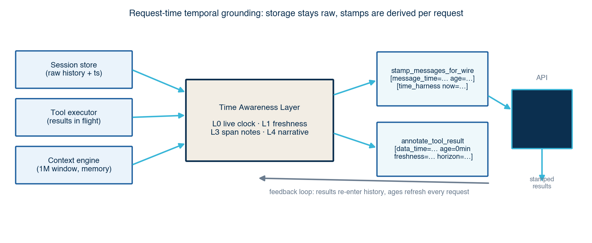
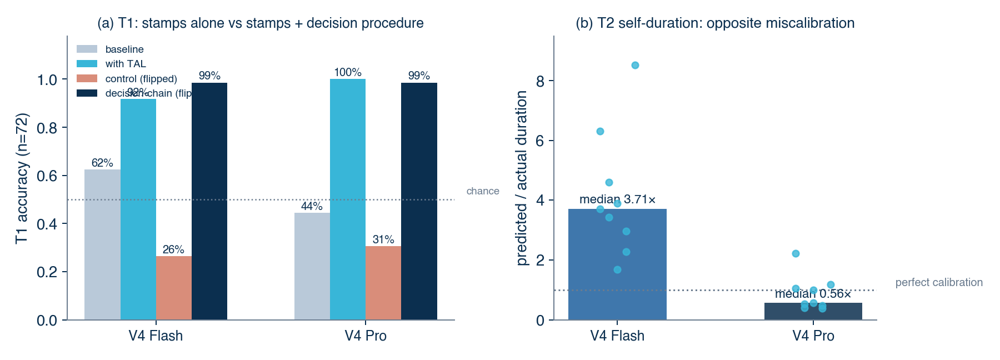
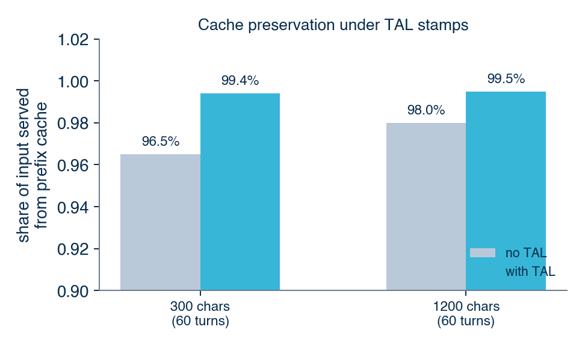
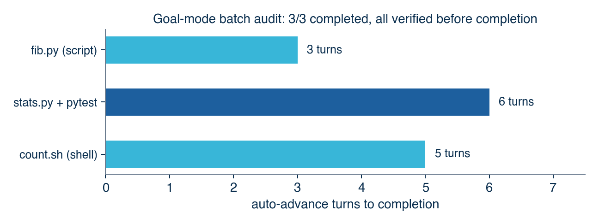

Draft v2 · DeepSeek Code project · 2026-08-06 配套 LaTeX 源文件：paper.tex（投稿用）；HTML 预览：preview.html 本轮新增：两模型大规模测评（72 T1 例 / 72 T3 声明 / 9 T2 任务 × Flash+Pro）、缓存实测、解析器加固
Autonomous LLM agents operate in long-lived sessions in which tool results, reasoning traces, and user messages accumulate inside a single context window. Because LLMs cannot perceive wall-clock time, stale observations are routinely treated as current: yesterday's test output is cited as today's state, and still-fresh data is needlessly re-fetched. The problem is amplified by 1M-token context windows, where outdated content can survive for days. We present the Time Awareness Layer (TAL), a request-time temporal grounding mechanism for agent harnesses, implemented in DeepSeek Code, a desktop IDE built around DeepSeek's 1M-token models. TAL injects a live clock, per-message timestamps with bucketed ages, per-tool freshness horizons stamped onto tool results, and conversation-span notes for long sessions—without modifying stored history, while preserving Anthropic-protocol tool-result adjacency, and while keeping prefix-cache invalidation confined to the tail of the input. We evaluate TAL on DeepSeek V4 Flash and V4 Pro with a three-probe benchmark (72 tool-alignment cases, 72 audit claims, and 9 duration tasks per model). TAL raises T1 tool-call alignment from 62.5% to 91.7% (Flash) and from 44.4% to 100% (Pro), with non-overlapping 95% Wilson intervals. An adversarial label-flip control, however, collapses T1 accuracy to 26–31%, showing that the model largely follows the explicit freshness label. A one-line decision procedure ("compute the age, compare it against the horizon, and treat the label as potentially wrong") recovers 98.6% accuracy under the same adversarially flipped labels in both models—evidence that the gap is reasoning depth, not model capability, and that temporal grounding should pair stamps with an explicit decision procedure. T3 gains are modest (+2.8 points, concentrated in ordering violations), and T2 reveals that Flash overestimates its own runtime (median 3.7×) while Pro underestimates it (median 0.56×). A cache probe shows TAL preserves DeepSeek prefix-cache hits (99.5% vs. 98.0% cached share) at a cost of roughly 22 tokens per message.

Agentic LLM workflows are conversations with a filesystem: the model reads files, runs commands, searches the web, and edits code, with every observation appended to a context window that may live for hours or days. This design has a hidden cost. A model has no intrinsic sense of elapsed time; it only knows what the text says. When an observation from yesterday sits next to an observation from two minutes ago, the model has no reliable way to tell them apart, so it often treats both as describing the present. Recent work confirms the problem is structural: LLMs misestimate their own runtime by 4–7× (Garikaparthi, ICLR 2026), and multi-turn models silently drift from an established temporal scope back to the present (ChronoScope, ACL 2026).
Long-context systems make this worse in a specific way. A 1M-token window does not just allow long sessions; it encourages them, and it changes what "stale" means. In a short session, an old tool result is likely to be compacted away or forgotten. In a million-token session, an 80k-token file listing from three days ago sits fully visible, verbatim, indistinguishable in presentation from a result fetched ten seconds ago. The very feature that makes long context powerful—retaining everything—becomes the mechanism by which temporal error persists.
Our position is that agent harnesses should make time legible to the model at the moment it matters: at request time, when the model decides whether to trust, reuse, re-fetch, or flag an observation. We make three contributions:
Temporal reasoning benchmarks. Test of Time (Fatemi et al., ICLR 2025) introduced synthetic datasets probing temporal reasoning across orderings, arithmetic, and consistency, and found current LLMs far below human performance. MegaTempQA scales temporal QA to a million pairs and uses it as a diagnostic for temporal hallucination. ChronoScope (ACL 2026) constructs over a million controlled multi-turn chains to isolate temporal drift—the bias toward the present when follow-ups omit time references—and proposes chain-consistency metrics. These benchmarks measure static reasoning; our work instead measures a harness intervention on an operating agent loop.
Time perception. Can LLMs Perceive Time? (Garikaparthi, ICLR 2026) experiments across 68 tasks and four model families show that LLMs overestimate their own task duration by roughly 4–7×, cannot order durations reliably, and remain miscalibrated even after finishing. Discrete Minds in a Continuous World (arXiv:2506.05790) proposes a Token-Time Hypothesis: models connect text length to elapsed time but have no direct clock signal. Our T2 probe reproduces the overestimation pattern on DeepSeek V4 Flash (median 3.71×, n=9), while DeepSeek V4 Pro underestimates its runtime (median 0.56×)—opposite directions within one family. TAL is explicitly designed to supply the missing external clock signal that these works identify.
Temporal validity in memory. MemStrata (arXiv:2606.26511) maintains temporal validity in retrieval memory by deterministically superseding contradicted facts in a bi-temporal ledger, eliminating stale-fact errors for knowledge retrieval. MemStrata operates at storage time and targets fact-level updates; TAL operates at request time and targets observation-level staleness (tool results, shell state, file reads). The two are complementary: storage-time supersession keeps memory clean, request-time stamping keeps the model's use of memory temporally grounded.
Context management in agent harnesses. Production harnesses mitigate unbounded growth with compression: Claude Code uses a multi-stage compaction pipeline, and Codex exposes API-side /responses/compact. Compression trades information for size; TAL trades a few hundred tokens for temporal precision and is orthogonal to compression. DeepSeek Code differs from these harnesses in scale: it keeps the entire project in a 1M-token window by design, so temporal grounding is not a niche concern but a first-order correctness issue.
DeepSeek Code is a desktop IDE (Tauri 2 + React) designed specifically for DeepSeek's Anthropic-compatible endpoint. Its distinguishing features are relevant here because they set the constraints under which TAL must operate:
tool_result message, as the Anthropic protocol requires. Every tool_use id is registered before spawning so that even a failed task is answered with its real id.We model temporal grounding as a stack of capabilities, and map each to an explicit, measurable injection point in the harness:
[time_harness now=...] stamp to the last user message of every request. The stamp is re-derived per request, so it never goes stale even in a long-running turn loop.[data_time=... age=0min freshness=just_fetched horizon=...]; per-tool horizons let the model compare age against a decision threshold instead of guessing. Every message additionally receives [message_time=... age=...].Derive, don't store. Stamps are applied to a clone of the message list at request time (stamp_messages_for_wire); stored sessions keep raw content. This has three consequences: (i) history is never polluted by stamps, so restoring a session can never double-stamp; (ii) ages are always computed against the current clock, so a turn that lasts an hour still reports correct ages; (iii) the harness is toggleable for ablation at runtime without migration.
Cache-conscious placement. DeepSeek prices prompt-cache reads below full input, and cache hits require a byte-identical prefix. TAL keeps the prefix stable in two ways. First, ages are bucketed (minutes, hours, days), so age=2d stays byte-identical until the bucket rolls over; within a bucket the entire history prefix is unchanged. Second, the live clock lives at the end of the input (last user message), so only the final segment changes between requests. The system prompt is clock-free by construction: a clock embedded at session initialization would go stale within the hour and create a second, conflicting time source (an IDE self-audit caught exactly this conflict before the fix), while refreshing it per turn would invalidate the entire prefix. The end-of-input stamp is therefore the single authoritative clock.
Protocol safety. DeepSeek's Anthropic-compatible endpoint validates that every tool_use is immediately followed by its tool_result; inserting a text stamp before a tool_result block yields HTTP 400. TAL therefore skips message-level stamps on tool-result messages—their content blocks already carry [data_time=...]—and only prepends text blocks to plain-text and assistant messages.
Freshness is claim-dependent: a stock quote and a file's contents do not expire on the same schedule. TAL attaches a per-tool horizon at stamp time and mirrors the same table in the system prompt:
| Tool class | Freshness horizon |
|---|---|
| --- | --- |
| stock / weather quotes | 15–30 min |
| package tracking | 6 h |
| web search | 24 h |
| shell / system state | 1 h |
| file contents | no expiry (re-read if the user asks about current state) |
The Rust harness implements the layer in three functions:
time_harness_system_section(now) — the rules block appended to the system prompt, listing the freshness semantics and horizons.annotate_tool_result(tool, content, now) — wraps every successful tool result with [data_time=... age=0min freshness=just_fetched horizon=...].stamp_messages_for_wire(messages, now, enabled) — derives per-message stamps, the conversation span note, and the live end-of-input clock. The same code path serves both fresh turns and restored sessions.Session persistence was upgraded in tandem. StoredMessage now carries blocks: Option<Vec<ContentBlock>>, so saved conversations include full tool-use/tool-result/web-search blocks rather than flattened text; the backend snapshots messages authoritatively at save time, and restore_session rebuilds the exact message structure before TAL stamps it for the wire. This is what makes "yesterday's session, resumed today" the canonical TAL scenario: restored history gets correct, current ages, and the model sees the conversation span note, instead of implicitly treating old content as fresh.
The system prompt deliberately contains no clock: refreshing now inside it per turn would invalidate the entire prefix cache on every request, and freezing it at session start would create a stale second clock source. The per-request end-of-input stamp is the single authoritative time; server-side web-search results are stamped on arrival (horizon=24h) alongside client tool results.
We measure the layer with three probes against DeepSeek V4 Flash and V4 Pro (temperature 0, thinking disabled for probe stability) through the same Anthropic-compatible endpoint the IDE uses. Each probe runs under two conditions: baseline (no harness annotations) and with TAL. The benchmark harness mirrors the production prompt and stamp formats exactly. Cases are generated programmatically (two seeds, deterministic): 72 T1 cases, 24 T3 logs (72 claims), and 9 T2 tasks per model. Ground truth is computed from the horizon table, never hand-labeled.
T1 — tool-call timing alignment. Each case pairs a prior tool observation with a fresh user request ("check the current value"); the model must decide whether to re-fetch (tool) or reuse (no_tool). Ages are drawn log-uniformly against each tool's horizon: fresh (0.08–0.9×), stale (1.1–100×), plus exact-boundary cases. Tools cover stock/weather (30 min), package tracking (6 h), web search (24 h), shell state (1 h), and file reads (30 min). T1 operationalizes L0+L1.
T2 — self-duration calibration. For nine generation tasks, the model first predicts its own wall-clock generation time, then executes; we report the ratio of predicted to actual duration. T2 characterizes L2; the harness does not yet modify this behavior.
T3 — temporal-consistency audit. Each of 24 logs (4–6 events) is paired with three claims; planted ordering or staleness bugs cycle deterministically, and the model labels each claim consistent (0) or inconsistent/stale (1). T3 operationalizes L3/L4.
Responses are parsed robustly (JSON code fences and prose tolerated; length must match). This matters: an early version of the harness lost 14/24 baseline logs to markdown-fence parse failures, inflating the apparent T3 gap; condition-dependent parse failure is a confound we now control for explicitly.
| Probe | Flash baseline | Flash TAL | Pro baseline | Pro TAL |
|---|---|---|---|---|
| --- | ---: | ---: | ---: | ---: |
| T1 accuracy (n=72) | 62.5% | 91.7% | 44.4% | 100% |
| T1 control, flipped labels (n=72) | — | 26.4% | — | 30.6% |
| T1 decision-chain (n=72) | — | 100% | — | 100% |
| T1 decision-chain, flipped labels (n=72) | — | 98.6% | — | 98.6% |
| T3 claim accuracy (n=72) | 93.1% | 95.8% | 93.1% | 95.8% |
| T2 median predicted/actual (n=9) | — | 3.71× | — | 0.56× |
Large-scale benchmark (two seeds, generated cases). T1/T3 are ablations; T2 is a characterization of the unmodified models. T1 gains are significant (non-overlapping 95% Wilson intervals); T3 gains are modest and concentrated in ordering violations.

**T1: the harness teaches when not to re-fetch.** Flash baseline sits at 62.5% and its errors are dominated by over-refetching fresh observations; Pro baseline is worse (44.4%), both over- and under-fetching. With TAL, Flash reaches 91.7% (±6.4 Wilson) and Pro reaches 100%—both non-overlapping with their baselines. The remaining Flash errors are diagnostic: all six cluster at or within 30 minutes of the horizon boundary (e.g., 25–26-minute-old stock quotes for a 30-minute horizon, and the exact 30-minute boundary case). The layer does not make the model reason continuously about age; it teaches clear-cut decisions and fails gracefully only where the decision itself is marginal.
T3: at scale, gains are modest and concentrated in ordering. Claim accuracy is 95.8% with TAL vs. 93.1% baseline for both models (+2.8 points). The gain lives in ordering violations (Flash 87.5% → 95.8%; identical for Pro); staleness claims are caught by both conditions because the generated logs make dates explicit. The earlier small-scale result (+16.7 points) was an artifact of baseline JSON parse failures, which we now control for. The honest interpretation: TAL's T3 contribution is consistency scaffolding for ordering, while staleness detection matters most when dates are implicit—the restored-session scenario that T1 already covers.
T2: opposite miscalibration directions. Flash overestimates its generation duration on all nine tasks (median 3.71×, mean 4.16, range 1.68–8.53). Pro underestimates on six of nine (median 0.56×, mean 0.87, range 0.39–2.23). The two models bracket perfect calibration from opposite sides, within one model family and one protocol. "LLMs overestimate their own duration" is therefore not universal: direction and magnitude are per-model properties, which motivates per-model L2 calibration rather than a fixed correction.
The first question about T1 is whether the model reasons from the timestamp or merely follows the freshness label we attach. We isolate this with a control condition: the same 72 T1 cases, with freshness labels adversarially flipped (a fresh observation stamped "stale", a stale one stamped "high"), while the raw age and horizon remain visible and truthful. If the model reasons from age, accuracy should stay near the with-TAL level; if it follows labels, accuracy collapses.
Accuracy drops to 26.4% (Flash) and 30.6% (Pro)—below the 50% chance level of this binary task. The model is not merely ignoring the timestamp; it is actively misled by the flipped label, following it in roughly 70% of cases and overriding it in the remaining ~30%. This is the central diagnostic of the paper: the accuracy gain runs through the explicit label, which the model maps to a decision, rather than through independent computation of age from the timestamp. TAL is effective when its annotations are correct and brittle when they are not; the remaining gap is age reasoning, not annotation.
The control result poses a concrete question: is the age-reasoning gap a model capability limit, or an attention/reasoning-depth problem that prompting can fix? We test this with a decision-chain condition: the same 72 T1 cases and the same annotations, but the system prompt now instructs the model to (1) compute the age from data_time versus the current clock, (2) compare it against the horizon, (3) reuse within the horizon and re-fetch at or beyond it, and (4) treat the freshness label as potentially wrong. The verdict must be stated on the final line after one sentence of reasoning.
| Condition | Flash correct | Flash flipped | Pro correct | Pro flipped |
|---|---|---|---|---|
| --- | ---: | ---: | ---: | ---: |
| Standard TAL prompt | 91.7% | 26.4% | 100% | 30.6% |
| Decision-chain prompt | 100% | 98.6% | 100% | 98.6% |
The result is decisive on both axes. First, decision-chain prompting raises accuracy to 100% even with correct labels, eliminating Flash's six near-boundary errors—the marginal cases the standard prompt gets wrong. Second, under adversarially flipped labels accuracy holds at 98.6% for both models (one error each out of 72: a 30-minute-boundary file read for Flash, and a mislabeled shell-state case for Pro). The same information, a different decision procedure, moves the outcome from near-chance to near-perfect.
This reframes the paper's central finding. The annotation supplies information; the decision procedure controls whether the model uses it. Default LLM behavior is to consume the pre-digested label; forcing explicit age-vs-horizon computation makes the timestamp itself the authority. Temporal grounding is therefore not just "add timestamps to the context"; it is stamps plus a decision procedure that compels their use.
A timezone robustness probe adds a fourth failure mode: cross-timezone age computation (US-Eastern vs. +0800), including a same-wall-clock-different-day trap (22:00 +0800 on Aug 5 vs. 10:00 +0800 on Aug 6—12 hours apart despite superficially similar clock times). With TAL annotations plus the decision procedure, accuracy is 100% (4/4); the no-annotation baseline is 75%, its only error being the familiar over-refetch bias on a 5-minute-old quote across a calendar-date rollover. Production stamps carry timezone offsets (%z) so the conversion is explicit rather than implied.
Stamping must not silently destroy DeepSeek's prompt-cache economics. We measure this directly with a synthetic 60-turn conversation, sent twice (identical prefix, new tail): once without stamps, once with TAL's per-message stamps and end-of-input clock. Cache reads are reported by the endpoint itself.

| Message length | No TAL cached share | With TAL cached share | Stamp overhead |
|---|---|---|---|
| --- | ---: | ---: | ---: |
| 300 chars (60 turns) | 96.5% | 99.4% | +1,336 tokens (50%) |
| 1200 chars (60 turns) | 98.0% | 99.5% | +1,408 tokens (29%) |
The cache-preservation claim holds: cached share is 99.4–99.5% with TAL vs. 96.5–98.0% without. Two design choices make this possible: ages are bucketed so the history prefix is byte-identical between requests within a bucket, and the live clock lives at the end of the input, so only the final segment changes. The clock-free system prompt never invalidates the prefix. The cost is real but bounded: ~22 tokens per message, i.e., 29% on 1200-character messages and less on longer tool results.
The same harness now exposes Codex-style persistent goals (objective + plan + token/time accounting, surviving restarts and model switches) with an auto-advance loop: after a turn ends with an active goal, the harness starts an internal continuation turn — a hidden trigger message that never enters session storage or the UI transcript — and keeps going until the goal is complete, blocked, budget-limited, reaches the user-tunable turn cap (default 10), the user presses ESC, or the model ends its turn with a short question (a needs_input heuristic). Stop reasons are surfaced to the UI.
We measured the loop on the production endpoint with real tool execution in a temp directory:
| Turn | Trigger | Real actions |
|---|---|---|
| --- | --- | --- |
| 1 | user goal message | update_plan + write_file (creates fib.py) |
| 2 | internal continuation | run_shell (actually runs the script) |
| 3 | internal continuation | update_plan + update_goal complete (385-char report) |
The goal ("write fib.py that prints the first 10 Fibonacci numbers, run it, verify") completed in three turns with zero human intervention: the model planned, executed, verified, and marked the goal complete itself. The probe and full trace ship with the benchmark (goal_advance_probe.py, --execute mode). This is a qualitative demonstration that the TAL goal stamp — objective, plan ages, freshness rules — is sufficient context for multi-turn autonomous progress without extra prompts.
A harder goal (a stats.py module with mean/median/std plus a pytest file, run and verified) also completed autonomously in five turns: environment check → write module + tests → iterate on failing tests → mark complete. The persisted plan lifecycle shows all four steps completed, i.e. the auto-advance loop sustains real multi-file work, not just single-script toy tasks.
We then ran a three-goal batch audit (fib.py, stats.py+pytest, count.sh) with real tool execution: 3/3 goals completed autonomously (median 5 turns), and every goal executed a verification step (run_shell running the code or tests) before calling update_goal complete — no empty completions, and the needs_input heuristic never fired prematurely. The audit trace ships with the benchmark (goal_advance_batch_result.json).

The goal system is also where TAL surfaces to users: plan steps carry live ages, steps paused past the horizon are flagged STALE before resumption, and step ETAs are calibrated per model from the T2 measurements.
cache_read_input_tokens and total_cache_savings, so a natural next experiment toggles TAL on a real long session and compares cache-hit fractions and USD savings, optionally aligning stamp buckets to DeepSeek's cache granularity.LLM agents will keep gaining context, not losing it, so temporal grounding is a durable problem. This paper shows that a lightweight, request-time layer—a clock, ages, freshness horizons, and span notes—changes agent behavior in exactly the direction users want: fresh data is trusted, stale data is re-fetched or flagged, and long conversations carry their own temporal context. The central mechanistic lesson is that annotation is not enough: models default to following the label, and the label-following gap is closed by a decision procedure that compels explicit age-vs-horizon reasoning. The implementation is in production in DeepSeek Code, the benchmark is released, and the remaining work is measurement at scale rather than mechanism.
The harness source (Rust) and both benchmarks (temporal_harness_bench.py, temporal_harness_bench_large.py, cache_probe.py) ship with the project. The large benchmark reads the model key from the IDE's local settings file and runs the full ablation + control protocol with a single command (python3 temporal_harness_bench_large.py --t1 36 --t3 12 --t2 9 --seeds 7 11 --workers 4 --out result.json); JSON results for Flash and Pro are included. Figures are regenerated by paper/scripts/make_figures.py. The only external dependency is a DeepSeek API key.
This work is itself about LLM agent harnesses, and LLMs were used throughout: the system under study is an IDE whose agent loop this paper describes, and LLMs assisted with drafting and editing parts of this manuscript, as permitted by the ICLR policy on LLM usage. The authors reviewed all technical claims, results, and prose; no LLM-generated content was accepted without verification.
72 cases per model (seeds 7, 11; 36 per seed). Tools and horizons: get_stock_price/get_weather/read_file 30 min; track_package 6 h; web_search 24 h; run_shell 1 h. Ages: fresh 0.08–0.9× horizon (expected no_tool), stale 1.1–100× (expected tool), plus exact-boundary cases (expected tool). Ground truth is computed from the horizon, never hand-labeled.
24 logs per model (12 per seed × 2 seeds). Each log: 4–6 events 2 minutes apart; 3 claims: one ordering claim (reversed when the planted bug is ordering), one staleness claim (old "deploy + health check" pair when the planted bug is staleness), one truthful count claim. Bug types cycle none → ordering → staleness.
Tool result (fresh):
[data_time=2026-08-06 09:00:00 age=0min freshness=just_fetched horizon=30min]
AAPL = $150.20Restored message (2 days old, session span note):
[time_harness: this conversation spans from 2d ago. Live data mentioned in
older messages may be stale — re-verify per the freshness rules before
relying on it.]
[message_time=2026-08-04 09:00:00 age=2d]
check the build
[time_harness now=2026-08-06 09:05:00]